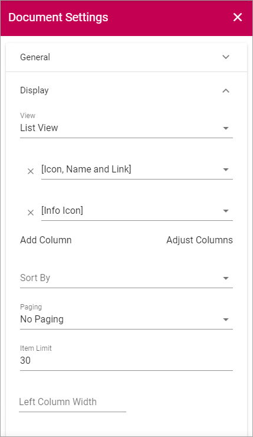
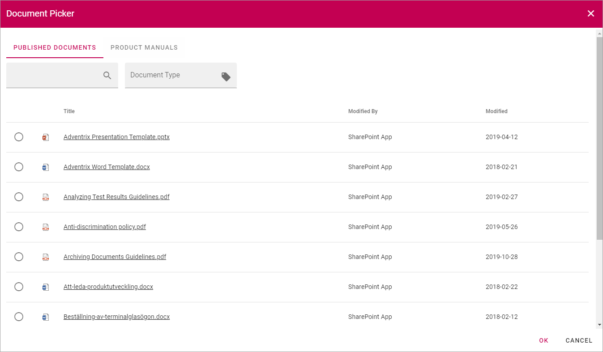
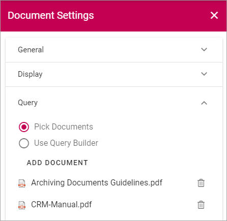

The Documents tab - authoring processes¶
Use this tab to link to documents applicabale for the process or process step. You can use these options:
General¶
Use the following settings here:

- Title: Add a title for the document link, in any or all available languages.
- Open in Client App: The default settings is that a document is opened in the online version of the application. If the document should be opened in the application installed on the user’s computer, select this option.
Display¶
Use these settings for how to display the documents list:
(All options are not shown in the image above.)
You use the settings here the same way as for the Document Rollup block, see the heading “Display” on this page: Document Rollup
Query¶
Here you select the documents. There are two ways: 1) Pick individual documents using the Document Picker, 2) Use the Query Builder.

Picking documents¶
To pick documents to display in the list, do the following:
- Select “Pick Documents” if it’s not already selected.
- Click “ADD DOCUMENT”.

The Document Picker starts:
- Use the Document Picker as described on this page: Document Picker
The selected documents are shown in the list, for example:
If you selected a document by mistake, click the dust bin.
A preview of the document list is also shown, for example:

- Continue this way until all documents you want to make available for this process or process step is selected.
Using the Query Builder¶
You use this Query Builder the same way as is described under “Query” for the Document Rollup block, see: Document Rollup
Refiner¶
Refiner is used the same way as is described under the heading “Refiners” on the Document Rollup page, see link above.